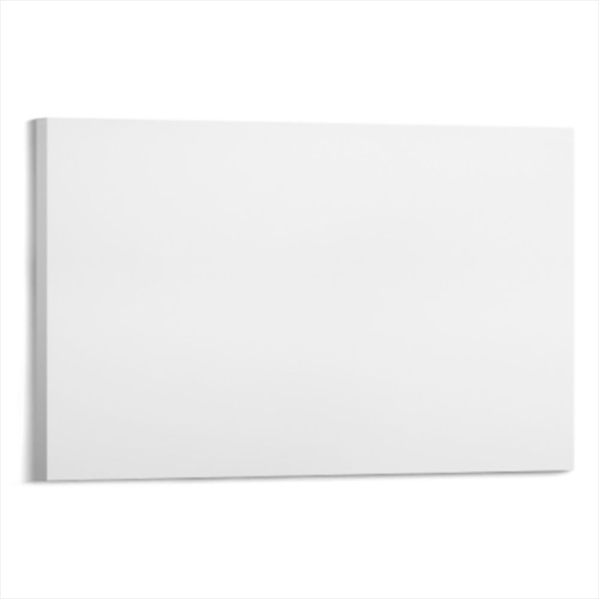
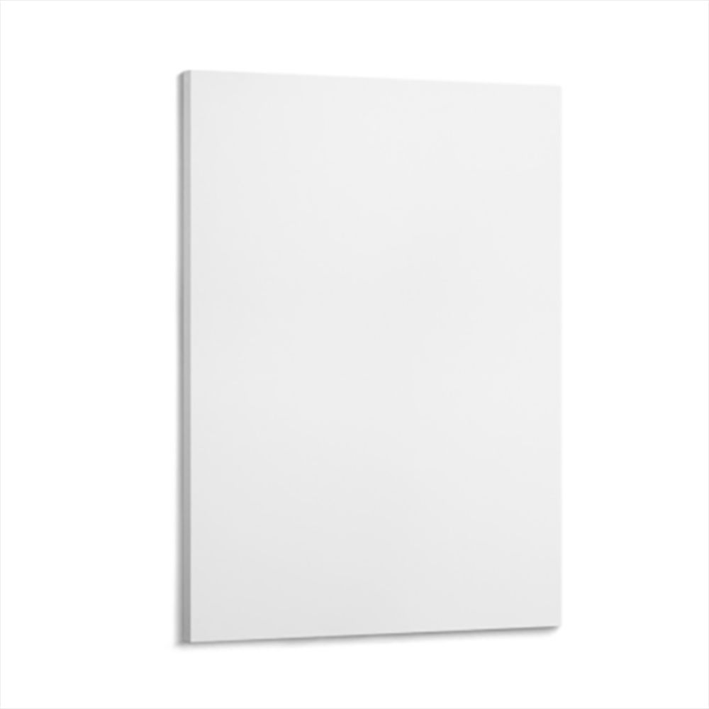

<!doctype html><html lang="zh-CN"><meta charset="utf-8"><meta name="viewport" content="width=device-width, initial-scale=1"><title>帆布画效果工作台</title>
<style>*{box-sizing:border-box}body{margin:0;background:#f3f5f8;color:#17263b;font:15px system-ui}header{background:#17263b;color:white;padding:22px 32px;display:flex;justify-content:space-between}h1{margin:0;font-size:22px}header span{color:#aabdd3}main{display:grid;grid-template-columns:300px 1fr;gap:24px;max-width:1250px;margin:24px auto;padding:0 20px}.panel,.stage{background:white;border-radius:16px;padding:22px;box-shadow:0 5px 25px #17263b08}h2{font-size:16px;margin:0 0 16px}.products{display:flex;gap:8px}.product{width:50%;padding:8px;border:2px solid #edf0f5;background:white;border-radius:10px;cursor:pointer}.product.active{border-color:#3379df;background:#eef5ff}.product img{width:100%}.product small{display:block;color:#66758a;margin-top:4px}.section{border-top:1px solid #edf0f5;margin-top:20px;padding-top:20px}button,.upload{font:inherit;cursor:pointer;border:1px solid #dce2ec;border-radius:8px;padding:10px 12px;background:white;color:#17263b}button:disabled{opacity:.4;cursor:not-allowed}.primary,.upload{background:#2868d7;color:white;border:0}.upload{display:block;text-align:center}input[type=file]{width:100%;margin-top:10px;font-size:12px}input[type=range]{width:100%;accent-color:#2868d7}label{display:block;margin:12px 0 8px}p,.hint{font-size:13px;color:#66758a;line-height:1.7}.row{display:flex;gap:8px;flex-wrap:wrap}.stage{display:flex;flex-direction:column;align-items:center}canvas{max-width:100%;width:min(100%,680px);height:auto;touch-action:none;cursor:grab;background:white}canvas:active{cursor:grabbing}.stage-top{display:flex;justify-content:space-between;width:100%;align-items:center}.badge{background:#eef5ff;color:#2868d7;padding:6px 12px;border-radius:20px;font-size:12px}#status{min-height:42px}#error{color:#b42318}#export{width:100%;margin-top:14px}footer{text-align:center;color:#8290a2;font-size:12px;padding:12px}@media(max-width:760px){main{grid-template-columns:1fr}.stage{grid-row:1}header span{display:none}}
</style><header><h1>帆布画效果工作台</h1><span>本地合成 · 原始素材保留 · 无需上传服务器</span></header><main><aside class="panel"><h2>01 / 选择产品</h2><div class="products"><button class="product active" data-product="landscape">横版 3:2<small>MQ19201068</small></button><button class="product" data-product="portrait">竖版 2:3<small>MQ19201067</small></button></div><div class="section"><h2>场景选择</h2><select id="scene" style="width:100%;padding:10px"><option value="white">白底商品图（已确认）</option><option value="dark">深色客厅</option><option value="light">浅色客厅</option></select><p>场景保留原图比例和像素；两款产品共用房间背景，画作位置为本地适配。</p><h2>02 / 上传素材</h2><input id="file" type="file" accept="image/png,image/jpeg"><p>JPG / PNG，最大 50 MB、宽高不超过 15000 px。可将图片拖入右侧预览区。</p><button id="demo">使用测试图案</button><div id="status" class="hint">请选择素材，或使用测试图案体验。</div><div id="error" role="alert"></div></div><div class="section"><h2>03 / 调整画面</h2><label style="font-size:14px"><input id="wrap" type="checkbox" checked> 镜像包边（可见左侧）</label><p>包边跟随当前裁切同步更新；取消勾选可对比旧版灰边。</p><label>缩放 <output id="zoomLabel">100%</output></label><input id="zoom" type="range" min="1" max="3" step="0.01" value="1" disabled><div class="row"><button id="reset" disabled>居中铺满</button><button id="rotate" disabled>旋转 90°</button></div><p>在画布正面拖动调整裁切。自动限制边界，避免露白。</p></div><button id="export" class="primary" disabled>下载效果图 PNG</button><p><span id="outputSize">白底输出 1000 × 1000 px</span> 商品效果图，不是生产打印文件。含可见左侧镜像包边；独立重建轮廓、光影与投影；非聚鼎原始分层模板，不代表生产包边尺寸。</p></aside><section class="stage"><div class="stage-top"><h2 id="productTitle">横版帆布画 · 3:2</h2><span class="badge">双产品 · 场景预览</span></div><label style="width:100%;font-size:13px">查看图层 <select id="layerView"><option value="effect">合成效果</option><option value="mask">独立轮廓遮罩</option><option value="light">独立光影</option><option value="shadow">独立投影</option></select></label><canvas id="preview" width="1000" height="1000" aria-label="帆布画效果预览"></canvas><p id="quality">底图加载中…</p></section></main><footer><a href="acceptance-scenes.html" target="_blank">场景验收图册</a> · <a href="acceptance-v5.html" target="_blank" style="color:#2868d7">V5 验收图册</a> · <a href="compare.html" target="_blank" style="color:#2868d7">历史聚鼎对比</a> · Canvas Studio / 两款帆布画模板 · 无第三方依赖</footer>
<script>
'use strict';
const $=s=>document.querySelector(s), canvas=$('#preview'), ctx=canvas.getContext('2d');
const products={landscape:{file:'MQ19201068-landscape.jpg',name:'横版帆布画 · 3:2',id:'MQ19201068',w:900,h:600,quad:[[79,198],[957,214],[956,785],[79,802]],side:[[59,203],[79,198],[79,802],[59,799]],wrapWidth:20},portrait:{file:'MQ19201067-portrait.jpg',name:'竖版帆布画 · 2:3',id:'MQ19201067',w:600,h:900,quad:[[269,100],[790,120],[789,882],[269,906]],side:[[258,103],[269,100],[269,906],[258,903]],wrapWidth:14}};
let current='landscape',art=null,angle=0,zoom=1,ox=0,oy=0,ready=false,drag=null,loadVersion=0;
const surface=document.createElement('canvas');const sc=surface.getContext('2d');
function imageReady(img){return new Promise((resolve,reject)=>{if(img.complete&&img.naturalWidth)return resolve();img.onload=resolve;img.onerror=()=>reject(Error("图片读取失败"))})}
function homography(q){const [a,b,c,d]=q;let dx1=b[0]-c[0],dx2=d[0]-c[0],dx3=a[0]-b[0]+c[0]-d[0],dy1=b[1]-c[1],dy2=d[1]-c[1],dy3=a[1]-b[1]+c[1]-d[1],det=dx1*dy2-dx2*dy1,g=(dx3*dy2-dx2*dy3)/det,h=(dx1*dy3-dx3*dy1)/det;return [b[0]-a[0]+g*b[0],d[0]-a[0]+h*d[0],a[0],b[1]-a[1]+g*b[1],d[1]-a[1]+h*d[1],a[1],g,h]}
function point(u,v){const m=homography(products[current].quad),z=m[6]*u+m[7]*v+1;return [(m[0]*u+m[1]*v+m[2])/z,(m[3]*u+m[4]*v+m[5])/z]}
function inverse(x,y){const m=homography(products[current].quad),a=m[0]-x*m[6],b=m[1]-x*m[7],c=m[3]-y*m[6],d=m[4]-y*m[7],e=x-m[2],f=y-m[5],det=a*d-b*c;return [(e*d-b*f)/det,(a*f-e*c)/det]}
// Each visible face has its own projective mapping. Mirror the first strip of
// the current front crop into the thickness face; both meet at source x = 0.
/* V5: code-native, independently rebuilt template layers.
 * The JPG is a reference/thumbnail only. It is never blended into the output.
 * A single supersampled silhouette covers BOTH faces, preventing internal gaps.
 */
/* V5: code-native, independently rebuilt template layers.
 * The JPG is a reference/thumbnail only. It is never blended into the output.
 * A single supersampled silhouette covers BOTH faces, preventing internal gaps.
 */
const TemplateRenderer = (() => {
 const SIZE=1000, cache=new Map();
 function canvas(){const c=document.createElement('canvas');c.width=c.height=SIZE;return c}
 function roundedPath(points,radii){
  const path=new Path2D();
  const near=(a,b,r)=>{const d=Math.hypot(b[0]-a[0],b[1]-a[1]);const t=Math.min(r/d,.25);return [a[0]+(b[0]-a[0])*t,a[1]+(b[1]-a[1])*t]};
  for(let i=0;i<points.length;i++){
   const p=points[i],prev=points[(i+points.length-1)%points.length],next=points[(i+1)%points.length];
   const a=near(p,prev,radii[i]),b=near(p,next,radii[i]);
   if(!i)path.moveTo(...a);else path.lineTo(...a);
   path.quadraticCurveTo(...p,...b);
  }
  path.closePath();return path;
 }
 function inverseMatrix(m,x,y){const a=m[0]-x*m[6],b=m[1]-x*m[7],c=m[3]-y*m[6],d=m[4]-y*m[7],e=x-m[2],f=y-m[5],det=a*d-b*c;return [(e*d-b*f)/det,(a*f-e*c)/det]}
 const clamp=x=>Math.max(0,Math.min(1,x));
 function build(p){
  if(cache.has(p.id))return cache.get(p.id);
  const outline=[p.side[0],p.quad[0],p.quad[1],p.quad[2],p.quad[3],p.side[3]];
  const path=roundedPath(outline,[3,2,p.id==='MQ19201068'?1.5:5,5,2,3]);
  const hi=document.createElement('canvas');hi.width=hi.height=SIZE*4;
  const hg=hi.getContext('2d');hg.scale(4,4);hg.fillStyle='#fff';hg.fill(path);
  const mask=canvas(),mg=mask.getContext('2d');mg.imageSmoothingQuality='high';mg.drawImage(hi,0,0,SIZE,SIZE);
  const alpha=mg.getImageData(0,0,SIZE,SIZE).data;
  const shadow=canvas(),sg=shadow.getContext('2d');sg.save();sg.filter='blur(5px)';sg.globalAlpha=.24;sg.translate(-4,6);sg.fillStyle='#14202b';sg.fill(path);sg.restore();sg.globalCompositeOperation='destination-out';sg.drawImage(mask,0,0);
  const bg=canvas(),bgctx=bg.getContext('2d');bgctx.fillStyle='#fff';bgctx.fillRect(0,0,SIZE,SIZE);bgctx.drawImage(shadow,0,0);
  const fm=homography(p.quad),sm=homography(p.side),map=[];
  const light=canvas(),lg=light.getContext('2d'),ld=lg.createImageData(SIZE,SIZE);
  for(let y=0;y<SIZE;y++)for(let x=0;x<SIZE;x++){
   const k=(y*SIZE+x)*4,a=alpha[k+3]/255;if(!a)continue;
   const seam=p.quad[0][0]+(p.quad[3][0]-p.quad[0][0])*clamp((y-p.quad[0][1])/(p.quad[3][1]-p.quad[0][1]));
   const side=x+.5<seam;let [u,v]=inverseMatrix(side?sm:fm,x+.5,y+.5);u=clamp(u);v=clamp(v);
   let shade;
   if(side){shade=.68+.16*u-.025*v}
   else{
    const w=Math.hypot(p.quad[1][0]-p.quad[0][0],p.quad[1][1]-p.quad[0][1]);
    const h=Math.hypot(p.quad[3][0]-p.quad[0][0],p.quad[3][1]-p.quad[0][1]);
    // Top-edge bevel removed; retain bottom and right bevels only.
    const bevel=Math.min((1-v)*h,(1-u)*w);
    shade=(.978-.035*v+.006*u)*(1-.07*Math.exp(-Math.max(0,bevel)/1.25));
   }
   map.push({k,a,u:side?(1-u)*p.wrapWidth/(p.w-1):u,v,shade,side});
   ld.data[k]=ld.data[k+1]=ld.data[k+2]=Math.round(shade*255);ld.data[k+3]=Math.round(a*255);
  }
  lg.putImageData(ld,0,0);
  const result={mask,alpha,shadow,bg,light,map};cache.set(p.id,result);return result;
 }
 function draw(ctx,p,source,{wrap=true,view='effect',transparent=false}={}){
  const t=build(p);ctx.clearRect(0,0,SIZE,SIZE);
  if(view==='mask'){ctx.fillStyle='#273448';ctx.fillRect(0,0,SIZE,SIZE);ctx.drawImage(t.mask,0,0);return}
  if(view==='shadow'){ctx.fillStyle='#fff';ctx.fillRect(0,0,SIZE,SIZE);ctx.drawImage(t.shadow,0,0);return}
  if(!transparent)ctx.drawImage(t.bg,0,0);
  if(view==='light'){ctx.drawImage(t.light,0,0);return}
  const output=ctx.getImageData(0,0,SIZE,SIZE),data=output.data;
  const src=source?source.getContext('2d').getImageData(0,0,p.w,p.h).data:null;
  for(const m of t.map){
   const sx=m.u*(p.w-1),sy=m.v*(p.h-1),ix=Math.floor(sx),iy=Math.floor(sy),jx=Math.min(ix+1,p.w-1),jy=Math.min(iy+1,p.h-1),fx=sx-ix,fy=sy-iy;
   for(let channel=0;channel<3;channel++){
    let c=248;
    if(src&&(!m.side||wrap))c=src[(iy*p.w+ix)*4+channel]*(1-fx)*(1-fy)+src[(iy*p.w+jx)*4+channel]*fx*(1-fy)+src[(jy*p.w+ix)*4+channel]*(1-fx)*fy+src[(jy*p.w+jx)*4+channel]*fx*fy;
    data[m.k+channel]=transparent?c*m.shade:c*m.shade*m.a+data[m.k+channel]*(1-m.a);
   }
   if(transparent)data[m.k+3]=Math.round(m.a*255);
  }
  ctx.putImageData(output,0,0);
 }
 return {draw,build};
})();


function render(){if(!ready)return;const p=products[current];if(!art){drawScene(ctx,p,null,{view:$('#layerView').value});$('#quality').textContent='底图已就绪，请上传素材。';return}surface.width=p.w;surface.height=p.h;let aw=angle%180?art.height:art.width,ah=angle%180?art.width:art.height;const scale=Math.max(p.w/aw,p.h/ah)*zoom;ox=Math.max(-(aw*scale-p.w)/2,Math.min((aw*scale-p.w)/2,ox));oy=Math.max(-(ah*scale-p.h)/2,Math.min((ah*scale-p.h)/2,oy));sc.fillStyle='#fff';sc.fillRect(0,0,p.w,p.h);sc.save();sc.translate(p.w/2+ox,p.h/2+oy);sc.rotate(angle*Math.PI/180);sc.drawImage(art,-art.width*scale/2,-art.height*scale/2,art.width*scale,art.height*scale);sc.restore();drawScene(ctx,p,surface,{wrap:$('#wrap').checked,view:$('#layerView').value});$('#quality').textContent=scale>1?'素材有效分辨率偏低，放大后可能模糊。':'素材清晰度适合当前预览；打印质量需另行检查。'}
function controls(){for(const id of ['zoom','reset','rotate','export'])$('#'+id).disabled=!art||!ready}
function reset(){zoom=1;ox=oy=0;$('#zoom').value=1;$('#zoomLabel').textContent='100%';render()}
function setArt(img,name){art=img;angle=0;$('#error').textContent='';$('#status').textContent=`${name} · ${img.width} × ${img.height} px`;controls();reset()}
async function upload(file){const version=++loadVersion;if(!file)return;try{if(!['image/png','image/jpeg'].includes(file.type))throw Error('请选择 JPG 或 PNG 图片。');if(file.size>50*1024*1024)throw Error('图片超过 50 MB。');const url=URL.createObjectURL(file);try{const img=new Image();img.src=url;await imageReady(img);if(img.width>15000||img.height>15000)throw Error('图片宽高需不超过 15000 px。');if(version===loadVersion)setArt(img,file.name)}finally{URL.revokeObjectURL(url)}}catch(e){if(version===loadVersion)$('#error').textContent=e.message}}
$('#file').onchange=e=>upload(e.target.files[0]);canvas.ondragover=e=>e.preventDefault();canvas.ondrop=e=>{e.preventDefault();upload(e.dataTransfer.files[0])};
$('.products').onclick=e=>{const b=e.target.closest('[data-product]');if(!b)return;current=b.dataset.product;document.querySelectorAll('.product').forEach(x=>x.classList.toggle('active',x===b));$('#productTitle').textContent=products[current].name;reset()};
$('#wrap').onchange=render;$('#layerView').onchange=render;
$('#zoom').oninput=e=>{zoom=+e.target.value;$('#zoomLabel').textContent=Math.round(zoom*100)+'%';render()};$('#reset').onclick=()=>{angle=0;reset()};$('#rotate').onclick=()=>{angle=(angle+90)%360;reset()};
function eventUV(e){const r=canvas.getBoundingClientRect();let x=(e.clientX-r.left)*canvas.width/r.width,y=(e.clientY-r.top)*canvas.height/r.height;if(sceneKey!=='white'){const t=sceneTransform(products[current]);x=(x-t.dx)/t.scale+t.sx;y=(y-t.dy)/t.scale+t.sy}return inverse(x,y)}canvas.onpointerdown=e=>{if(!art||!ready)return;const uv=eventUV(e);if(uv.some(v=>v<0||v>1))return;drag={uv,ox,oy};canvas.setPointerCapture(e.pointerId)};canvas.onpointermove=e=>{if(!drag)return;const uv=eventUV(e),p=products[current];ox=drag.ox+(uv[0]-drag.uv[0])*p.w;oy=drag.oy+(uv[1]-drag.uv[1])*p.h;render()};canvas.onpointerup=canvas.onpointercancel=()=>drag=null;
$('#demo').onclick=()=>{++loadVersion;const c=document.createElement('canvas');c.width=1800;c.height=1200;const g=c.getContext('2d');g.fillStyle='#dbece9';g.fillRect(0,0,1800,1200);g.fillStyle='#e3aa65';g.beginPath();g.arc(1280,370,210,0,7);g.fill();g.fillStyle='#244b52';g.beginPath();g.moveTo(0,1200);g.lineTo(0,900);g.lineTo(530,350);g.lineTo(1200,1200);g.fill();g.fillStyle='#55817c';g.beginPath();g.moveTo(600,1200);g.lineTo(1330,610);g.lineTo(1800,970);g.lineTo(1800,1200);g.fill();g.fillStyle='#244b52';g.font='52px sans-serif';g.fillText('CANVAS / 01',90,130);setArt(c,'内置测试图案')};
$('#export').onclick=()=>{if(!art||!ready)return;const previousView=$('#layerView').value;$('#layerView').value='effect';render();canvas.toBlob(blob=>{if(!blob){$('#error').textContent='导出失败，请重试。';return}const url=URL.createObjectURL(blob),a=document.createElement('a');a.href=url;a.download=products[current].id+'-'+sceneKey+'-mockup.png';a.click();setTimeout(()=>URL.revokeObjectURL(url),5000)},'image/png');$('#layerView').value=previousView;render()};

let sceneKey='white';
const scenes={dark:{file:'scenes/dark-layer-a.png',cx:370,top:38,height:240,maxWidth:395},light:{file:'scenes/light-layer-a.png',cx:282,top:70,height:225,maxWidth:340}};
const sceneLayer=document.createElement('canvas');sceneLayer.width=sceneLayer.height=1000;
function sceneTransform(p){const s=scenes[sceneKey],pts=[...p.quad,...p.side],sx=Math.min(...pts.map(a=>a[0])),sy=Math.min(...pts.map(a=>a[1])),w=Math.max(...pts.map(a=>a[0]))-sx,h=Math.max(...pts.map(a=>a[1]))-sy,scale=Math.min(s.height/h,s.maxWidth/w);return {sx,sy,w,h,scale,dx:s.cx-w*scale/2,dy:s.top}}
function drawScene(ctx,p,source,options){
 if(sceneKey==='white'){if(canvas.width!==1000||canvas.height!==1000){canvas.width=canvas.height=1000}TemplateRenderer.draw(ctx,p,source,options);return}
 const s=scenes[sceneKey],t=sceneTransform(p);if(canvas.width!==s.img.width||canvas.height!==s.img.height){canvas.width=s.img.width;canvas.height=s.img.height}
 ctx.clearRect(0,0,canvas.width,canvas.height);ctx.drawImage(s.img,0,0);
 const g=sceneLayer.getContext('2d');TemplateRenderer.draw(g,p,source,{...options,transparent:true});
 ctx.save();ctx.translate(t.dx-t.sx*t.scale,t.dy-t.sy*t.scale);ctx.scale(t.scale,t.scale);
 if(options.view==='effect')ctx.drawImage(TemplateRenderer.build(p).shadow,0,0);
 ctx.drawImage(sceneLayer,0,0);ctx.restore();
}
$('#scene').onchange=e=>{sceneKey=e.target.value;drag=null;$('#layerView').value='effect';$('#layerView').disabled=sceneKey!=='white';$('#outputSize').textContent=sceneKey==='white'?'白底输出 1000 × 1000 px':`场景输出 ${scenes[sceneKey].img.width} × ${scenes[sceneKey].img.height} px`;render()};

Promise.all([...Object.values(products).map(async p=>{p.img=new Image();p.img.src=p.file;await imageReady(p.img)}),...Object.values(scenes).map(async s=>{s.img=new Image();s.img.src=s.file;await imageReady(s.img)})]).then(()=>{ready=true;controls();render()}).catch(()=>$('#error').textContent='底图加载失败，请通过启动脚本打开页面。');
</script></html>


